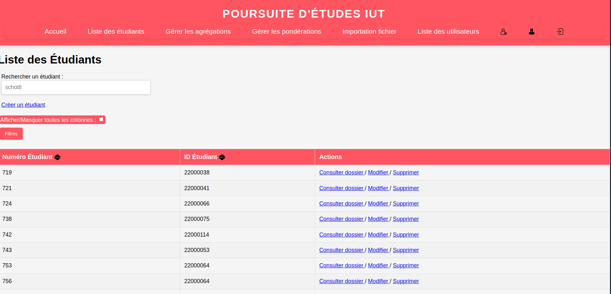
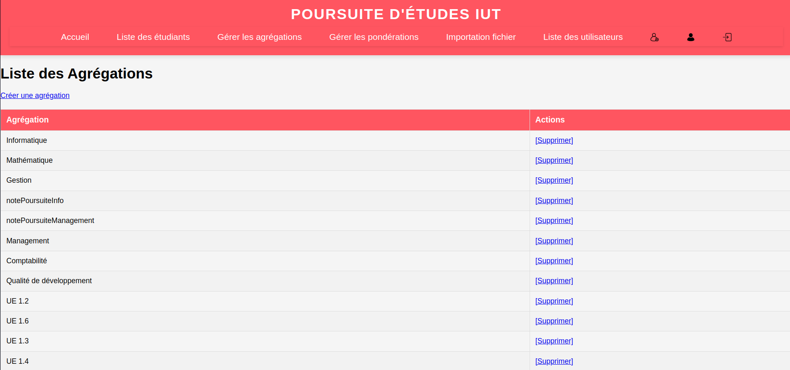
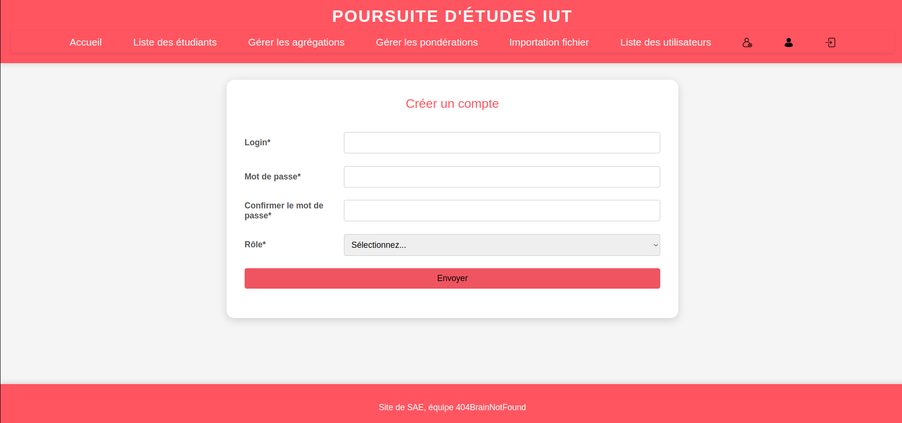

Site de gestion pour la poursuite d'étude
Contexte du projet
Ce projet a été réalisé dans le cadre d'une SAE (Situation d'Apprentissage et d'Évaluation) en BUT Informatique. L'objectif était de concevoir et développer un site web de gestion de la poursuite d'études pour répondre aux besoins d'un client réel : un enseignant coordinateur de la poursuite d'études à l'IUT. Le site devait permettre aux étudiants de déclarer leurs candidatures et aux enseignants de suivre les statistiques et les résultats.
Nous étions une équipe de quatre étudiants travaillant en méthode agile Scrum. Mon rôle principal était celui de développeur backend, mais j'ai également occupé le poste de ScrumMaster durant plusieurs sprints. Cette double casquette m'a permis de développer des compétences techniques tout en apprenant à coordonner une équipe et à animer les cérémonies Scrum (stand-ups, sprint reviews, rétrospectives).
Le projet a demandé une conception technique complète : modélisation de la base de données relationnelle, développement d'une architecture MVC en PHP orienté objet, mise en place d'un système d'authentification sécurisé (classique et LDAP), et création d'interfaces utilisateur adaptées aux différents rôles.
Compétences développées
- Développement web backend : maîtrise de PHP orienté objet, architecture MVC, gestion de sessions
- Authentification et sécurité : implémentation d'un double système d'authentification (classique + LDAP)
- Gestion des rôles et permissions : système de contrôle d'accès basé sur les rôles (RBAC)
- Base de données relationnelle : conception de schéma complexe, requêtes SQL avancées, jointures
- Architecture logicielle : structuration MVC, séparation des responsabilités, code maintenable
- Méthodes agiles : pratique de Scrum, animation en tant que ScrumMaster, gestion de backlog
- Travail d'équipe : collaboration via Git, gestion des branches, code review, résolution de conflits
- Communication client : recueil des besoins, présentations régulières, adaptation aux feedbacks
Fonctionnalités principales
- Double authentification : connexion classique (email/mot de passe) ou via LDAP de l'IUT
- Gestion des comptes utilisateur : création, modification, suppression avec différents rôles
- Déclaration de candidatures : formulaire pour les étudiants permettant de saisir leurs vœux de poursuite d'études
- Suivi des résultats : mise à jour du statut des candidatures (accepté, refusé, en attente)
- Statistiques et tableaux de bord : visualisation des données pour les enseignants
- Gestion des formations : ajout, modification des formations disponibles
- Export de données : génération de rapports pour l'administration
Défis techniques
- Intégration LDAP : connexion sécurisée au service d'annuaire de l'IUT pour l'authentification
- Gestion des permissions : implémentation d'un système flexible de contrôle d'accès
- Respect des délais : organisation rigoureuse pour livrer les fonctionnalités dans les temps
- Coordination d'équipe : animation des cérémonies Scrum et résolution des blocages
Voici un lien vers le site (la BDD était hébergée par un membre du groupe sur son espace personnel privé à l'IUT, elle n'existe peut-être plus à l'heure actuelle donc il y aura des erreurs)
Illustrations du travail réalisé
  Technologies utilisées
Rôles dans le projet
- Développeur backend principal
- ScrumMaster (plusieurs sprints)
Apprentissages clés
Ce projet m'a permis d'approfondir mes compétences en développement backend sécurisé, notamment avec l'intégration LDAP et la gestion avancée des rôles. L'expérience de ScrumMaster m'a également enseigné l'importance de la communication, de l'organisation et de la facilitation dans un projet agile.